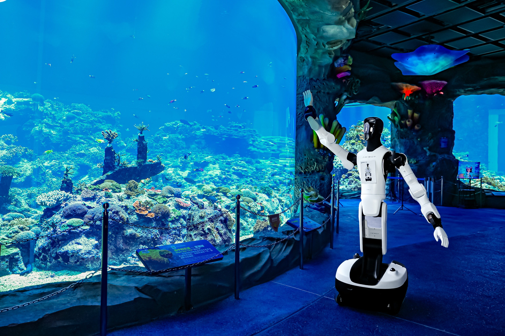

人形脉冲
本周政策层把「人形机器人」写进新质生产力顶层文件，六项目国标锁定 2027·4·1 实施节点；产业侧 Agility 在 Investor Day 同步 SPAC 材料与 Digit 5 产线叙事，智元以 IDC 出货与越南 RaaS 双线出海。编辑判断：标准与意见提供采购口径，资本路演与专利公示则考验能否用可审计工时回应「部署态」质疑。

国内政策
中共中央、国务院意见：加快推进人形机器人等新一代智能终端场景应用
10月9日，新华社受权发布《中共中央 国务院关于发展新质生产力的意见》。文件在「人工智能+」专条中明确，推进人工智能改造传统产业，加快推进智能网联新能源汽车、人工智能手机和电脑、人形机器人等新一代智能终端场景应用；并强调布局国家人工智能行业应用中试基地和高价值应用场景，构建 AI 安全监测与应急响应体系。编辑判断：这是继工信部人形机器人指导意见、实景实训专项行动之后，更高层级的场景应用动员令；对整机与 RaaS 厂商，关键在能否把乐园、工厂等已公开部署转化为可审计的工时与失败率台账。
中国政府网
六项目人形机器人国标发布：2027 年 4 月 1 日起实施
10月9日，电器杂志援引市场监管总局批次公告：GB/T 48316—2026《人形机器人仿真测试平台技术规范》与 GB/T 48317.1—2026 至 GB/T 48317.5—2026《人形机器人技术要求》系列（总则、环境感知、决策规划、运动控制、作业操作）将于 2027 年 4 月 1 日统一实施，由 TC591/SC5 归口。编辑观点：仿真平台与五部分技术要求构成「测—规」闭环，采购与验收将更多引用国标条款；企业宜在过渡期内对照感知、运控、作业操作分册做型式试验留痕，而非仅依赖企业标准或展会演示视频。
电器杂志
厦门异构机器人训练场试运营：十类实景区采集真机数据
10月8日，科技日报稿（经北京国家科技中心转载）介绍厦门同安滨海新城约 2000 平方米异构机器人训练场：超市、家居、仓储等 10 个实景区，人形、轮臂、协作臂等通过主从臂、VR 与第一视角视频采集分步动作数据。场站由拓元智慧牵头、依托国家级实验室与产业联合体建设，今年7月试运营，并已对接仓储、泛工业等本地企业。稿内援引《厦门市具身智能产业发展三年行动方案（2026—2028年）》目标：到 2028 年关联产业规模 300 亿元以上。编辑判断：训练场密度正在长三角、京津冀、珠三角之外向东南延伸；读者应关注数据是否按任务 SLA 标注并可回流模型版本，而非只看进驻机器人数量。
北京国家科技中心
网信办转载央视：具身智能训练场集群与实景实训专项行动并进
10月10日，中央网信办转载央视网稿称，全国已建成启用 70 余家具身智能训练场、在建规划 40 余家，深圳轮臂人形机器人可完成开关电柜、启闭阀门等作业；并提及工信部等部委专项行动聚焦工业、服务、特种，构建「实景实训—数据沉淀—产品迭代—规模部署」闭环。稿引 2025 年 AI 核心产业规模超 1.2 万亿元。编辑观点：与 №03 已报道的工信厅联科函〔2026〕256 号形成政策—传播共振；对编辑而言，下一步验收信号是各省 11 月 30 日前能否提交可量化成效总结，而非训练场合规数量本身。
中央网络安全和信息化委员会办公室
国外前沿
arXiv：VioLA 以人体运动 latent 预训练，G1 上零样本 loco-manipulation
10月8日提交（arXiv:2610.12435）。VioLA 预测身体与手部 motion latent，由预训练 body/hand 控制器在真机执行；人体与机器人动作经 motion encoder 映射到同一 latent，训练池 1.406 亿帧中 93.2% 来自人类数据。作者报告真机 loco 指令零样本成功率 100%（对照 GR00T N1.7 16.7%、Ψ₀ 0%），manipulation 88.6%，并在两种 VLA 与一种 world-action 骨干上复现。编辑判断：价值在扩大 demonstration 供给而不增遥操成本；产业侧需独立验证 latent 认证条件与产线安全联锁，而非只看相对基线的成功率差距。
arXiv
arXiv：Workhorse 无 retarget 人体数据训练 G1 全身 loco-manipulation
10月6日提交（arXiv:2610.09117）。Workhorse 用视觉 planner 预测 torso、双腕与双足五连杆目标，RL whole-body tracker 在 G1 上跟随；两策略均在同一人体姿态记录上训练且不做 retarget，并通过互相模仿部署误差做数据增广。真机演示含踢箱分拣、接抛箱、攀爬行李箱，并在推搡、夺箱干扰下恢复；仿真房间分拣 77% 成功率、40 N·s 推扰下 64%。编辑观点：「planner + tracker」分解利于产线分阶段验收；风险在 planner 对未见物体几何的外推，需与 MES 节拍和工装治具一并报告。
arXiv
arXiv：Being-M0.7 混合模态人类数据预训练 latent world-action 模型
10月8日提交（arXiv:2610.11283）。Being-M0.7 整合 1 万小时以上仅视频、仅 motion 与配对 video-motion 人类数据，联合预测未来视觉 latent 与 motion，再经 robot mid-training 与 action post-training 适配 G1。作者称在 SIMPLE 基准综合成功率领先，真机 loco-manipulation 与最强基线持平。编辑判断：混合模态管线回应「人体视频多、机器人配对少」的结构性短缺；仍待披露 mid-training 数据域与工厂通道 lighting 差异下的独立复现。
arXiv
arXiv：Beyond Retargeting 以 motion primitive 码本实现低延迟全身遥操
10月6日提交（arXiv:2610.07891，Tencent Robotics X 等）。方法跳过在线 retarget，单次前向将人体观测与本体感觉映射为 G1 关节命令；离散 motion primitive 码本将 OOD、部分观测投影到可执行全身原型。作者在仿真与真机对比 VR、光学动捕、文本生成与单目视频等输入，报告相对 retarget 基线更低延迟与更高鲁棒性。编辑观点：遥操链路缩短直接服务数据采集与故障接管；部署侧应审计码本覆盖的任务分布，避免产线罕见姿态被投影到错误原型。
arXiv
重点新闻
本期主条
Agility 举办 Analyst & Investor Day：Digit 5 与 SPAC 合并时间表同步披露
10月6日，Agility 在纽约举办 Analyst & Investor Day 并全球直播，展示 Digit 5 协作安全架构、65,000+ 小时运行口径与 3 亿美元级 Digit 5 多年订单，并重申与 Churchill Capital Corp XI（CCXI）业务合并拟于 2026 年四季度完成、纳斯达克 ticker「AGLT」。同日 SEC Form 8-K 附件 99.1 披露 Foxconn 参与 PIPE 等 SPAC 材料。编辑判断：路演把「无围栏协作」与资本时间表绑在一起；产业读者应交叉阅读客户现场 MTBF 与 8-K 中订单里程碑条件，而非仅看 pre-money 估值叙事。
Agility Robotics
智元 IDC 报告：上半年出货超 8600 台，长隆部署态引述
10月8日，智元官网援引 IDC《中国具身智能机器人（人形）市场分析，2025H2-2026H1》：2026 上半年全球人形出货约 2.5 万台、同比增 432.1%，中国约 2.19 万台；智元称自身上半年出货超 8600 台。通稿同步描述横琴长隆超 300 台机器人七大场景「部署态」8 小时运营，以及远征 A3 与观众自主乒乓互动。编辑观点：IDC 第三方数据与乐园公开运营并置，有利于对冲纯自报销量；仍缺独立统计的故障间隔与运维编制，不宜把互动项目直接外推为工业 SLA。
智元创新（上海）科技股份有限公司
智元 × 越南国家创新中心：河内峰会发布「元苼计划」与 RaaS
10月8日，智元官网发布 10 月 2 日河内「首届越南具身智能产业峰会」回顾：与越南国家创新中心（NIC）、ECOLIV、Great Education 联合主办，500 余人参会，覆盖科技部、教育部、工业部与 50 余所高校代表。现场发布面向越南教育科研的「元苼计划」，并宣布 RaaS 模式由本地伙伴承担交付与售后。编辑判断：出海路径从整机销售转向「计划 + RaaS + 本地运维」打包；应跟踪越南场景 PO 是否披露计费口径与备件 SLA，而非仅看授牌与计划名称。
智元创新（上海）科技股份有限公司

宇树 × 山东三源电力：产业大会展示电力管廊巡检与人形矩阵
10月10日《齐鲁晚报》稿（新浪财经转载）报道，2026 人工智能产业大会上，山东三源电力作为宇树战略合作伙伴展示巡检机器人、四足与人形矩阵；稿内回溯宇树四足已进入雄安新区 15 米深电缆隧道执行局放、红外与气体识别，并提及 2026 年 8 月双臂人形面向分拣、上下料等工业场景开放二次开发。编辑观点：春晚级运动控制与电力管廊任务并置，检验的是同一套运控栈在低速精检与动态表演间的迁移；读者应要求隧道场景连续里程与人工复核比例，而非只看参展 SKU 数量。
新浪财经
比亚迪「具身智能机器人」外观专利 CN310247768S 公示
10月9—10日，多家媒体报道国家知识产权局公示比亚迪股份有限公司外观设计专利 CN310247768S（授权公告日 2026 年 10 月 6 日），产品名「具身智能机器人」，用途为具备行走、平衡及交互的服务、教育或工业场景。稿引「小迪」参数：身高 1.61 m、58.5 kg、31 自由度，灵巧手重复定位精度 ±1 mm。编辑判断：主机厂专利曝光强化「汽车 + 机器人」供应链复用预期；与宇树、智元量产节奏对照，应等待可第三方观摩的门店或工厂连续运行数据，而非仅读外观图与自由度清单。
新浪财经
湖南省工信厅：全国产化电子架构具身智能机器人亮相宜昌发布会
10月9日，湖南省工信厅转载稿称，9 月 28 日湖北宜昌国产化电子架构具身智能机器人发布会全球首台搭载全国产化电子架构（操作系统、网络、工具软件与 AI 芯片）样机亮相；国家工业信息安全发展研究中心在关节破坏、网络攻击、病毒植入等测试中对比传统架构。稿强调「Harness」式安全驾驭与产业主权安全。编辑观点：供应链「全国产化」标签回应政企采购的安全关切；编辑仍希望看到与具体整机型号、出货量绑定的第三方认证编号，而非单次发布会对比表格。
湖南省工业和信息化厅